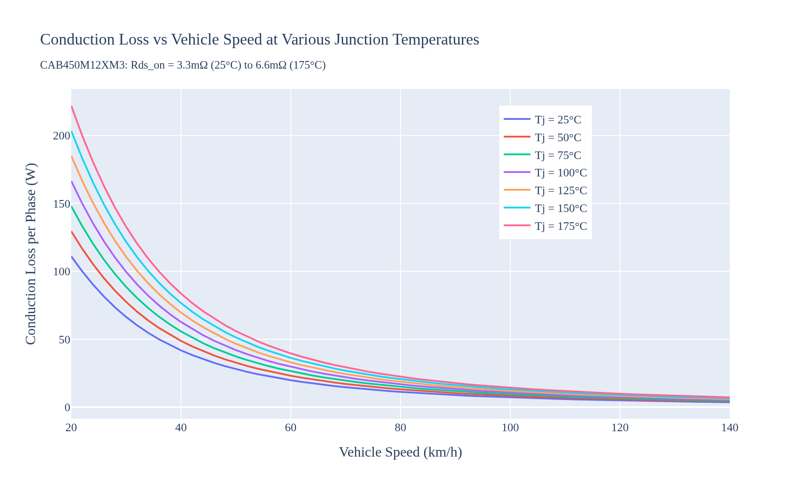
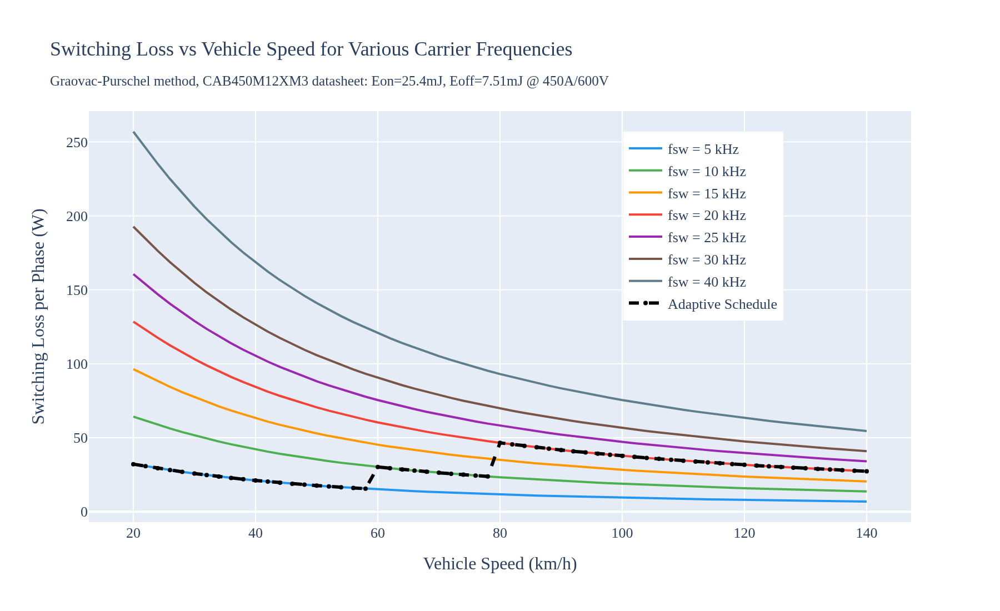
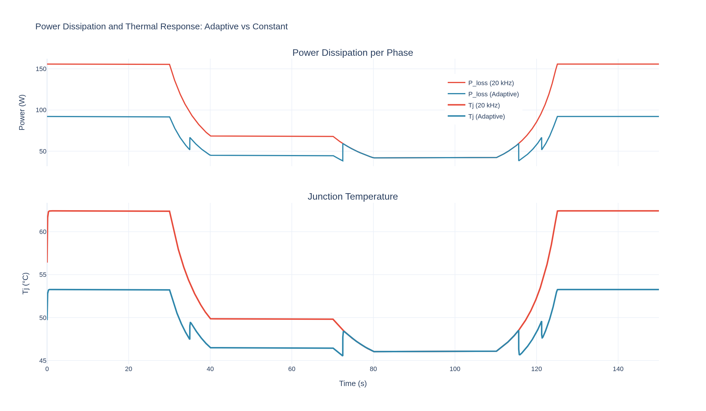
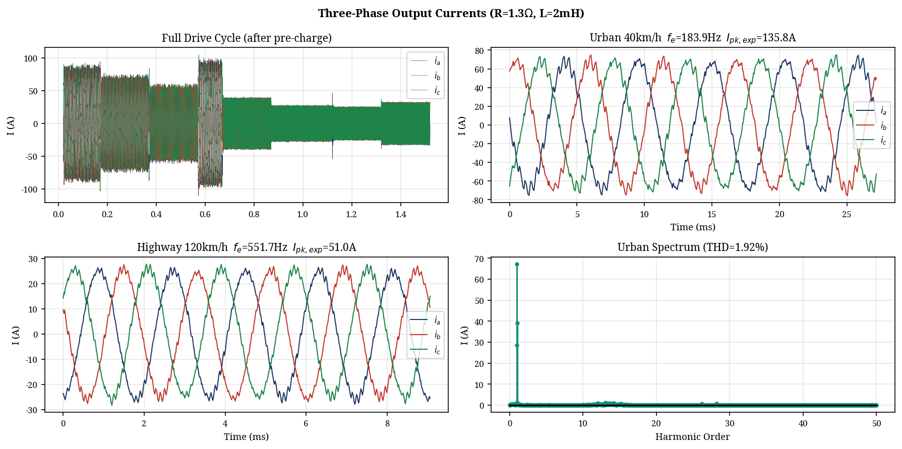
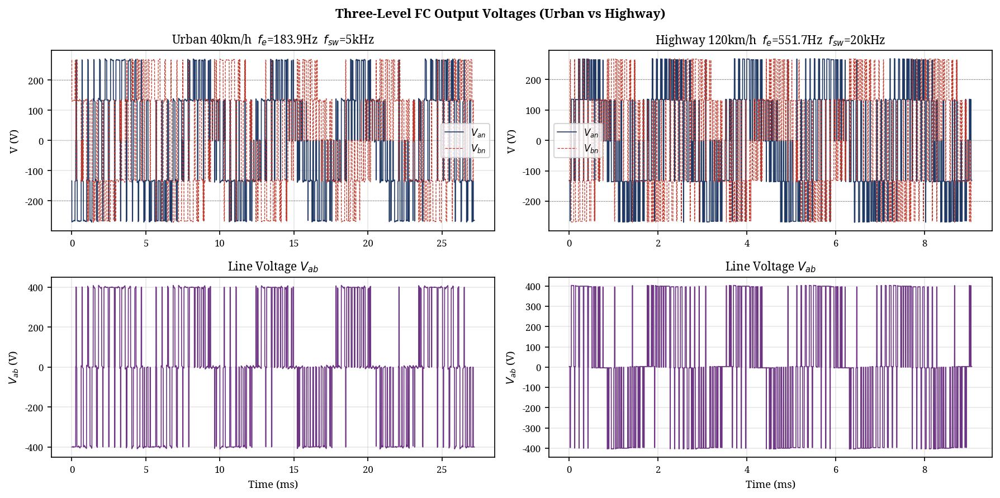
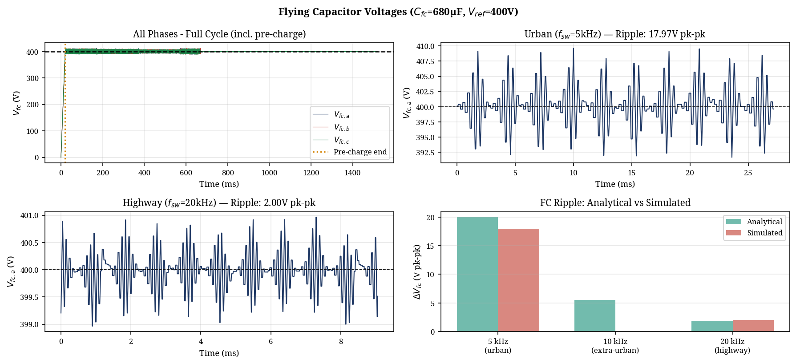

Abstract—The design of electric vehicle (EV) traction inverters requires balancing efficiency, torque quality, and semiconductor thermal stress across highly variable driving conditions. This paper presents the specification, simulation, and comprehensive loss analysis of a three-level traction inverter driving a three-phase load. To address modern EV performance demands, an 800V DC bus architecture was explicitly chosen for this design to reduce phase currents and ohmic losses. The selection of the Flying Capacitor (FC) topology over the Neutral Point Clamped (NPC) alternative is detailed, highlighting advantages in thermal symmetry and natural balancing. A detailed conduction and switching loss analysis was conducted utilizing the Graovac-Purschel analytical method and datasheet parameters from a commercial 1200V, 450A SiC module. Results show that an adaptive switching frequency schedule yields a 75% reduction in switching losses during high-current urban driving compared to a fixed 20 kHz baseline. Full time-domain simulations validate the design, demonstrating successful natural capacitor balancing, proper pre-charge handling, excellent output waveforms, and safe thermal operation.
I. INTRODUCTION
The traction inverter is a critical component in Electric Vehicle (EV) powertrains, responsible for converting DC battery power into the variable-frequency AC power required to drive the traction motor. A fundamental challenge in traction inverter design is that the required electrical fundamental frequency is not fixed; it is directly proportional to the vehicle's mechanical speed. During city driving, the inverter operates at low fundamental frequencies but must deliver high phase currents for acceleration. Conversely, highway driving requires high fundamental frequencies but lower sustained currents. Consequently, evaluating inverter performance requires modeling the system across a full spectrum of operating conditions rather than a single nominal point.
To address the performance demands of modern EVs, an 800V DC bus architecture was chosen as the baseline for this design project. While traditional EVs utilize 400V systems, adopting an 800V architecture halves the required phase current for a given power level, drastically reducing I²R ohmic losses in the inverter, motor windings, and cabling [1]. However, this elevated DC link voltage presents significant design challenges. Traditional two-level voltage source inverters (2L-VSI) require 1200V-class semiconductors. While Silicon Carbide (SiC) devices meet this requirement, their fast switching transitions generate severe dv/dt stress, leading to premature motor insulation failure [2]. To mitigate this, a multilevel inverter topology is required to synthesize the output voltage from multiple discrete levels, inherently reducing the voltage step size and improving the harmonic profile [3].
II. MODELING
This section details the topology selection, component modeling, and the vehicle architecture constraints used to define the inverter operating points.
A. Topology Selection: FC vs. NPC
When designing a three-level traction inverter for an 800V EV architecture, the two primary candidates are the Neutral Point Clamped (NPC) and the Flying Capacitor (FC) topologies. A rigorous comparative analysis dictates the selection of the FC topology for this application based on several critical factors unique to EV traction [4].
A major disadvantage of the NPC topology is the unequal distribution of conduction and switching losses among its semiconductor devices. The outer switches in an NPC inverter process different current profiles than the inner switches, leading to asymmetric thermal stress. This complicates cooling system design and degrades long-term reliability [5]. In contrast, the FC topology distributes voltage and current stresses symmetrically across all four switches in a phase leg. Every switch blocks exactly half the DC bus voltage (Vdc/2), allowing the use of identical power modules throughout the design. Furthermore, the FC topology eliminates the need for the clamping diodes required in the NPC, removing components from the conduction path and thereby reducing overall conduction losses [6].
EV traction drives are characterized by highly dynamic, rapidly fluctuating load profiles. The NPC topology relies on the neutral point of the DC-link capacitor bank, which is notoriously difficult to keep balanced under transient conditions. The FC topology, however, utilizes redundant switching states to naturally balance the flying capacitor voltage. By actively selecting between redundant states based on the phase current direction, the flying capacitor remains balanced at Vdc/2 regardless of the load power factor.

B. Component Selection
The Wolfspeed CAB450M12XM3 SiC half-bridge power module was selected for the active switches. The 1200V blocking rating provides a mandatory 50% safety margin over the 800V nominal bus (400V per switch in the 3L-FC configuration) to withstand transient spikes. The 450A continuous current rating provides a robust 3.3x margin over the worst-case peak urban phase current (136A) [7].
The flying capacitor (Cfc) must be sized to maintain voltage ripple within a 5% budget (20V on a 400V reference). Using the sizing equation C = Ipk / (2 * fsw_min * ΔVfc), with Ipk = 136A, fsw_min = 5 kHz, and ΔVfc = 20V, the required capacitance is 680 μF. Automotive-grade metallized polypropylene film capacitors are specified due to their exceptionally low Equivalent Series Resistance (ESR < 5 mΩ) and high ripple current capability [8].
C. Vehicle Architecture and Operating Points
To accurately model inverter losses and performance, the electrical operating points must be mapped from the vehicle's mechanical state. The test vehicle architecture is defined by an 800V DC bus, a single-speed reduction gear (ratio G = 8.19), a tyre radius (r) of 0.315 m, and an 8-pole Permanent Magnet Synchronous Motor (pole pairs p = 4).
The fundamental electrical frequency (fe) required by the motor is directly proportional to the vehicle speed (v, in m/s):
fe = (v / r) * (G / 2π) * p
Urban driving (40 km/h) requires a relatively low electrical frequency of 184 Hz, while highway cruising (120 km/h) demands 552 Hz. The inverter was modeled driving an RL load (R=1.3Ω, L=2mH). Because the load impedance increases with frequency, the peak phase current (Ipk) is inversely proportional to vehicle speed. Urban driving represents the highest current stress (136 A at 40 km/h), while highway driving draws significantly less current (51 A at 120 km/h).
D. Comprehensive Loss Formulation
To quantify the efficiency impact of the drive frequency, the industry-standard analytical method proposed by Graovac and Purschel [9] was utilized alongside detailed parameters from the CAB450M12XM3 datasheet (Rds_on: 3.3 mΩ at 25°C to 6.6 mΩ at 175°C; Eon = 25.4 mJ, Eoff = 7.51 mJ at 450A/600V; Rth_jc = 0.094 °C/W).
Conduction loss is temperature-dependent and scales with the square of the RMS current. The average switching power loss per phase (Psw) for a 3-level inverter can be expressed as:
Psw = Nc * (fsw / π) * Esw_ref * (Ipk / Iref) * (Vdc_sw / Vref)
Where Nc is the number of switches commutating per PWM transition (Nc = 2 for 3L-FC).
III. SIMULATION RESULTS
This section presents the results of both the analytical loss optimization and the full time-domain simulation.
A. Analytical Loss and Thermal Optimization
Fig. 2 and Fig. 3 illustrate the conduction and switching losses across the vehicle speed range. Conduction loss is heavily dependent on junction temperature, exhibiting a 2x increase from 25°C to 175°C. Switching loss scales linearly with the carrier frequency (fsw). At a fixed 20 kHz, switching losses dominate at low speeds (urban driving) due to the high phase currents (136A).


The analytical loss model reveals that operating at a fixed 20 kHz carrier frequency is severely sub-optimal for urban driving. Based on these findings, an adaptive switching frequency schedule was developed and fully implemented within the time-domain simulation. The core methodology of this adaptive schedule relies on maintaining a sufficient frequency modulation ratio (mf = fsw/fe) to ensure waveform quality while minimizing losses. During the simulation, as the vehicle operates at low urban speeds, the fundamental frequency (fe) is low (e.g., 184 Hz at 40 km/h). The controller dynamically reduces the switching frequency to 5 kHz while still maintaining a high modulation ratio (mf ≈ 27). This reduction yields massive switching loss savings exactly when the phase current is highest. Conversely, as the simulated vehicle accelerates to highway speeds, fe increases significantly (e.g., 552 Hz at 120 km/h), and the controller automatically increases the switching frequency to 20 kHz to prevent unacceptable harmonic distortion (mf ≈ 36). Because the required phase current is much lower at these speeds, absolute switching losses remain manageable even at 20 kHz. The cycle-by-cycle losses and resulting thermal impacts are extracted directly from this dynamic time-domain simulation.
| Metric | Urban (40 km/h) | Highway (120 km/h) |
|---|---|---|
| Electrical Freq (fe) | 183.9 Hz | 551.7 Hz |
| Peak Current (Ipk) | 135.8 A | 51.0 A |
| Fixed 20kHz Sw. Loss | 84.3 W/phase | 31.7 W/phase |
| Scheduled Sw. Loss | 21.1 W/phase (5kHz) | 31.7 W/phase (20kHz) |
| Fixed 20kHz Tj | 63.2 °C | 46.0 °C |
| Scheduled Tj | 53.5 °C | 46.0 °C |
As detailed in Table I, the adaptive schedule yields a massive 75% reduction in switching losses during urban driving, equating to a saving of nearly 190 W (3-phase) at 40 km/h. This directly translates to a 9.7°C reduction in semiconductor junction temperature.

A transient thermal simulation over a mixed drive cycle (Fig. 4) further demonstrates the benefits of the adaptive schedule. The thermal cycling amplitude is reduced by 53% (from 16.4°C to 7.7°C), which significantly extends the fatigue lifetime of the power modules.
B. Time-Domain Waveforms
To validate the operational stability of the design, a full time-domain simulation was constructed in Python using the datasheet-calibrated parameters. The inverter successfully synthesized the three-level output voltage. Fig. 5 shows the resulting phase current waveforms, and Fig. 6 shows the output voltage waveforms. The Total Harmonic Distortion (THD) of the phase current, calculated using a Hanning-windowed FFT, was excellent: 1.92% for the urban segment (5 kHz) and 1.13% for the highway segment (20 kHz).


C. Flying Capacitor Balancing and Pre-Charge
A critical operational requirement is the pre-charging of the 680 μF flying capacitor to prevent severe overvoltage across the inner switches at startup. The simulation incorporates a 20ms pre-charge sequence, linearly ramping Vfc to 400V before active PWM switching commences. As shown in Fig. 7, the PD-PWM balancing algorithm maintained the flying capacitor voltage exceptionally well, with a mean error of less than 0.04V from the 400V reference and a simulated urban ripple of 18.0V (matching the analytical 20V budget).

IV. CONCLUSION
This paper demonstrated that traction inverter design and optimization cannot be conducted in isolation from the vehicle architecture. The transition to an 800V architecture provides significant system-level benefits, and the 3L-FC topology was selected over the NPC alternative due to its superior thermal symmetry and natural balancing capabilities under dynamic EV loads. Component selection was rigorously justified using industry standards. By mapping mechanical vehicle speed to inverter electrical parameters, a comprehensive loss profile was generated using the Graovac-Purschel analytical method and CAB450M12XM3 datasheet parameters. Implementing a speed-adaptive switching frequency schedule reduced urban switching losses by 75%, saving 190 W (3-phase) and reducing thermal cycling amplitude by 53%. The time-domain simulation validated the design, maintaining excellent FC voltage balancing, low THD (<2%), and safe thermal operation. This approach significantly improves overall drivetrain efficiency and reliability where EVs spend the majority of their operational life. It should be noted that the simulation employs ideal switching transitions and does not model parasitic effects such as device voltage drops, discrete dead-time distortion, DC bus ripple, or stray inductance; incorporating these non-idealities in future work would yield more conservative THD and loss estimates.
REFERENCES
[1] I. Aghabali et al., "800-V electric vehicle powertrains: Review and analysis of benefits, challenges, and future trends," IEEE Trans. Transp. Electrific., vol. 6, no. 4, pp. 1696-1714, 2020.
[2] D. Graovac and M. Pürschel, "IGBT Power Losses Calculation Using the Data-Sheet Parameters," Infineon Application Note, vol. 1, no. 1, pp. 1-15, 2009.
[3] D. Cittanti et al., "Analysis and Conceptualization of a 800 V 100 kVA Full-GaN Three-Level Flying Capacitor Inverter for Next-Generation EV," IEEE J. Emerg. Sel. Topics Power Electron., vol. 10, no. 6, pp. 7264-7281, 2022.
[4] Wolfspeed, "CAB450M12XM3 1200 V, 450 A Silicon Carbide Half-Bridge Module Datasheet," Rev. 3, Jan. 2024.
[5] A. Shukla and A. Joshi, "Natural Balancing of Flying Capacitor Voltages in Multicell Inverter Under PD Carrier-Based PWM," IEEE Trans. Power Electron., vol. 26, no. 6, pp. 1682-1693, 2011.
[6] IPC, "Requirements for Power Conversion Devices for the Computer and Telecommunications Industries," IPC-9592B Standard, 2012.
[7] X. Ding et al., "Analytical and experimental evaluation of SiC-inverter nonlinearities for traction drives used in electric vehicles," IEEE Trans. Veh. Technol., vol. 67, no. 1, pp. 156-169, 2017.
[8] H. Wang and F. Blaabjerg, "Reliability of capacitors for DC-link applications in power electronic converters—An overview," IEEE Trans. Ind. Appl., vol. 50, no. 5, pp. 3569-3578, 2014.
[9] E. Gurpinar and B. Ozpineci, "Loss analysis and mapping of a SiC MOSFET based segmented two-level three-phase inverter for EV traction systems," 2018 IEEE Transp. Electrific. Conf. (ITEC), pp. 468-473, 2018.
[10] W. Taha and B. Nahid-Mobarakeh, "Efficiency evaluation of 2L and 3L SiC-based traction inverters for 400V and 800V electric vehicle powertrains," 2021 IEEE Energy Convers. Congr. Expo. (ECCE), pp. 5241-5248, 2021.